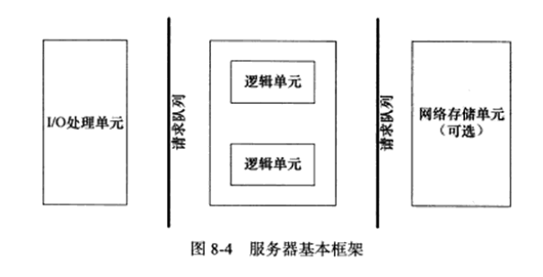
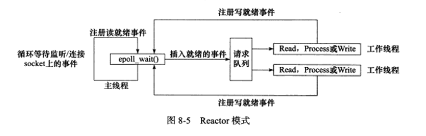

问题描述
接收从无线数据网络通过TCP/IP协议传回的测试仪数据。要求并发处理500条信息/秒。
需求分析
- 服务器接收从客户端传来的数据（，解析数据并插入数据库）
- 服务器要求并发处理500条信息/秒
程序设计
服务器编程框架
虽然服务器程序种类繁多，但其基本框架都一样，不同之处在于逻辑处理。

该图既能用来描述一台服务器，也能用来描述一个服务器机群。两种情况下各个部件的含义和功能如下表所示。
| 模块 | 单个服务器程序 | 服务器机群 |
|---|---|---|
| I/O处理单元 | 处理客户连接、读写网络数据 | 作为接入服务器，实现负载均衡 |
| 逻辑单元 | 业务进程或线程 | 逻辑服务器 |
| 网络存储单元 | 本地数据库、文件或缓存 | 数据库服务器 |
| 请求队列 | 各单元之间的通信方式 | 各服务器之间的永久TCP连接 |
I/O处理单元是服务器管理客户连接的模块。它通常要完成以下工作：等待并接受新的客户连接，接收客户数据，将服务器响应数据返回给客户端。但是，数据的收发不一定在I/O处理单元中执行，也可能在逻辑单元中执行，具体在何处执行取决于事件处理模式（见后 文）。对于一个服务器机群来说，I/O处理单元是一个专门的接入服务器。它实现负载均衡，从所有逻辑服务器中选取负荷最小的一台来为新客户服务。
一个逻辑单元通常是一个进程或线程。它分析并处理客户数据，然后将结果传递给I/O 处理单元或者直接发送给客户端（具体使用哪种方式取决于事件处理模式）。对服务器机群 而言，一个逻辑单元本身就是一台逻辑服务器。服务器通常拥有多个逻辑单元，以实现对多 个客户任务的并行处理。
网络存储单元可以是数据库、缓存和文件，甚至是一台独立的服务器。但它不是必须 的，比如ssh、telnet等登录服务就不需要这个单元。
请求队列是各单元之间的通信方式的抽象。I/O处理单元接收到客户请求时，需要以某 种方式通知一个逻辑单元来处理该请求。同样，多个逻辑单元同时访问一个存储单元时，也 需要采用某种机制来协调处理竞态条件。请求队列通常被实现为池的一部分，我们将在后面 讨论池的概念。对于服务器机群而言，请求队列是各台服务器之间预先建立的、静态的、永 久的TCP连接。这种TCP连接能提高服务器之间交换数据的效率，因为它避免了动态建立 TCP连接导致的额外的系统开销。
Reactor模式
随着网络设计模式的兴起，Reactor和Proactor事件处理模式应运而生。同步I/O模型通 常用于实现Reactor模式，异步I/O模型则用于实现Proactor模式。
Reactor是这样一种模式，它要求主线程（I/O处理单元，下同）只负责监听文件描述上是否有事件发生，有的话就立即将该事件通知工作线程（逻辑单元，下同）。
使用同步I/O模型（以epoll_wait为例）实现的Reactor模式的工作流程是：
- 主线程往epoll内核事件表中注册socket上的读就绪事件。
- 主线程调用epoll_wait等待socket上有数据可读。
- 当socket上有数据可读时，epoll_wait通知主线程。主线程则将socket可读事件放入请求队列。
- 睡眠在请求队列上的某个工作线程被唤醒，它从socket读取数据，并处理客户请求，然后往epoll内核事件表中注册该socket上的写就绪事件。
- 主线程调用epoll_wait等待socket可写。
- 当socket可写时，epoll_wait通知主线程。主线程将socket可写事件放入请求队列。
- 睡眠在请求队列上的某个工作线程被唤醒，它往socket上写入服务器处理客户请求的结果。
下图总结了Reactor模式的工作流程。

工作线程从请求队列中取出事件后，将根据事件的类型来决定如何处理它： 对于可读事件，执行读数据和处理请求的操作；对于可写事件，执行写数据的操作。
深入理解Reactor模式
程序实现
源码地址： https://github.com/gitforhzc/linux_c_epoll.git
socket接受线程：C语言为了高并发所以选择了epoll。当程序启动的时候（g_net_update.c文件中main函数，会启动一个thread见函数create_accept_task）这个thread就处理一件事情，只管接收客户端的连接，当有连接进来的时候 通过epoll_ctl函数，把socket fd 加入到epoll里面去，epoll设置监听事件EPOLLIN | EPOLLET; 主要是监听的是加入到epoll中的socket是否可读(因为我的需求是客户端连上了server就会马上向server发送一份数据的)。其它的部分在主线程中处理。
主线程：是一个无线循环，epoll_wait 函数相当于把客户端的连接从epoll中拿出来（因为我们监听的是EPOLLIN | EPOLLET）说明这个时候客户端有数据发送过来）。再通过recv_buffer_from_fd 函数把客户端发送过来的数据读出来。然后其他的一切就抛给线程池去处理。
线程池：(代码中我会在池里面创建15个线程) 双向链表。加入线程就是在链表后面加一个链表项，链表的前面会一个一个被拿出来处理。主要是malloc 函数free函数，sem_wait函数sem_post的处理（sem_wait 会阻塞当值大于0是会减一，sem_post是值加一）。typedef void* (FUNC)(void arg, int index);是我们自定义的线程的逻辑处理部分，arg是参数，index是第几个线程处理(我们隐形的给每个线程都标了号)，例如代码中的respons_stb_info，更加具体可以看看代码里面是怎么实现的。聪明的你也可以改掉这块的内容改成动态线程池，当某个时刻的处理比较多的时候能够动态的增加线程，而不像我代码里面的是固定的。
数据库连接池：按照我的需求在处理客户端请求数据的时候是要访问数据库的。就是一下子创建出一堆的数据连接。要访问数据库的时候先去数据库连接池中找出空闲的连接，具体可以看下代码。使用的时候可以参考下database_process.c文件（代码中数据库连接池和线程池中的个数是一样的）。这里我想说下get_db_connect_from_pool这个函数，我用了随机数，我是为了不想每次都从0开始去判断哪个连接没有用到。为了数据库连接池中的每个链接都能等概率的使用到，具体的还是可以看下代码的实现。
log文件，代码中是可以自动保存log信息到文件中去的，具体可以看下代码。
程序维护
最初的时候server程序跑起来占掉了linux 90%多的使用率，因为是我们在create_accept_task 中socket没有设置成非阻塞的。
server经常碰到一些莫名其妙的死机，没办法用了core dump 去抓死机的堆栈信息看在哪个函数死机的。
在处理数据库的时候有的数据会自动的断掉(说是说8个小时) 后来采用的办法是每次都先mysql_ping一次让他重新连接上。
在Linux下面用到的几个命令
1 | ./server程序名 & //加&后台运行。 |
参考文档
[1] Linux高性能服务器编程 游双著
[2] Linux + C + Epoll实现高并发服务器(线程池 + 数据库连接池)